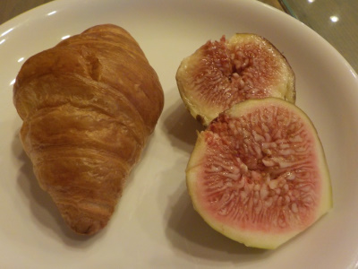
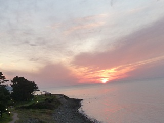
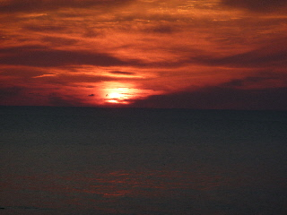

ディナーバイキングでお腹いっぱい食べました。
2019/09/22
今日は豪華に外食したい。でも何を食べに行くか決めれない。
迷ったのでなんでもありそうなバイキングに行くことにしました。
マリンタラソ出雲のレストランはディナーバイキングが大人1620円です。
ドリンクバーを付けるとプラス194円で合計1814円となります。
スープがあるのでドリンクは付けなくてもいいですが、デザートと一緒にコーヒー飲みたいと思ったので付けました。

お勧めだなと思ったのは写真のイチジクとクロワッサンです。
多伎のイチジクは甘くて美味しかったです。
クロワッサンはお店で焼き立て出来立てが食べれました。焼き直しじゃないです。
外はパリパリ、中はふんわりです。出来立てパンは美味しいです。
ローストビーフ、握り寿司、お刺身などありちょっと豪華でした。
ここのバイキングは油がきつくないので、沢山食べれる気がしました。
制限時間の80分を使って、好きなものを好きなだけ食べてお腹いっぱいになりました。
80分食べて2000円以下なのでお得かなと思いました。
マリンタラソ出雲で夕食と夕日
2011/09/25
マリンタラソ出雲で夕ご飯を食べました。
レストランの経営が変わってからは初めて行きました。
お料理のカットが小さ目になったので、ちょっとづつ沢山の種類の料理がお皿に盛れて良かったです。
あと、味付けが薄くなったのもいいです。
お値段が少し高くなった気がしますが、その分料理の種類が増えていました。
変わった野菜をしゃぶしゃぶしてオリーブオイルで食べたり、フルーツのピザがあったりして良かったです。
今日は天気が良かったので夕日も見れました。

写真はいまいちですが、実際は真っ赤で綺麗でしたよ。

アップだとこんな感じです。
日の入りの時間を計算して行くといいかもしれません。
マリンタラソのランチバイキングでお腹いっぱい
2009/06/21
今日は父の日なので家族連れでいっぱいだろうな～って思い、ちょっと遅めに行ったんですが、混んでて順番待ちをしました。人気がありますね。
私が居た時は女性と子供が多かったので、ちょっとお料理のローテーションが悪く、次々と新しい料理が出てこなかったです。そして、食べたいものが出てくると、皆で取り合いになってました。から揚げとデザートは早いもの勝ち状態でした。
遅い時間に行くよりも、早い時間の方がいいかもしれませんね。
いっぱい食べる人が少ないせいか、今日はご飯ものが多く並んでいた気がしました。ご飯、しじみご飯、ピラフ、ドリア、オムライスがありました。
レストランタラソのディナーバイキング
2006/12/30
一年お疲れ様でしたって事で、豪華にディナーバイキングです。
でも1300円なのでちょっと地味ですかね。
広告にはお寿司の写真があったので、ディナーにはお寿司が出てくるかもって思い期待してたんですが、実際はなかったです。残念。お寿司食べ放題で1300円なんてやっぱないですよね。
今日食べたのは、パスタ（トマト系とオイル系）、ご飯、炊き込みご飯、稲荷寿司、カレー、豚汁、中華スープ、中華茶碗蒸、おでん、筑前煮、カボチャの煮たの、コロッケ、魚の酢のもの、魚のフライ、鳥のから揚げ、ローストポーク、牛のたたき、サーモンのカルバッチョ、刺身、味噌ナス、味噌味の豆腐、ポテトサラダ、野菜サラダ、パイナップル、オレンジ、ヨーグルト、おしるこ、葡萄のゼリー、紫芋のスイートポテト、クッキー、オレンジジュース、麦茶、コーヒーです。
いっぱい食べました。
ここのお店は、１つお皿が空いたら同じ料理が大盛りになって帰ってくるんじゃなくて、違うメニューが出てくるので、長くいればいるほど、沢山の種類の料理が食べれるので、ちょこっとずつのんびり食べると色々食べれていいんですよね。制限時間いっぱい食事をするのをお勧めします。
マリンタラソ出雲のランチバイキング
2006/8/5
今日は贅沢にランチバイキング（1000円）です。
マリンタラソって元多伎町が作った公共施設的なイメージがあって、やぼったいんじゃないかなーって思ってたんですけど、そんなにひどくヤボな感じじゃなかったです。
ちょっと通路とか狭いですけど、リゾートホテルっぽい感じで、開放感があって良かったです。まだ新しい施設なので、白い壁がとても綺麗でした。
レストランは天井がちょっと高くなってるうえに、海側はガラス張りになってるので明るくて開放感ありました。海側の外はウッドデッキがあって、そこのテーブルでも食事が出来るようになってました。ばっちりリゾート気分を味わえそうな環境ですね。
でも、何故か松の木が海辺に並んで植えてあるんですよね。「何をしたいの？和洋折衷？」って感じで不思議な世界になってます。
ランチバイキングですが、ごちゃごちゃした料理が少なくて、取り分けがしやすかったです。
食べ物自体のカットサイズが小さ目だったのと、お皿の大きさが中くらいだったので、一気に食べ過ぎる様なことがなくて、長い時間食事が楽しめました。
ちなみに今日あったメニューで覚えているものは、ご飯・麦ご飯・炊き込み御飯・カレー・スープ・サラダスパ・サラダうどん・冷やし中華・サラダご飯・味噌汁・冬瓜の煮物・カボチャの煮物・ごぼう・こんにゃく・から揚げ・コロッケ・とろろ・もやし炒め・スライスタマネギ・レタス・肉じゃが・オクラ・さつまいものレモン煮・冷奴・フルーツヨーグルト・苺のフルーチェっぽいもの・フルーツゼリー・オレンジ・オレンジジュース・麦茶・水・コーヒーです。
今思ったんですが、けっこうヘルシー。重たい食べ物が少ないので、ちょっとずつ沢山の種類が食べれました。また行ってもいいかな。